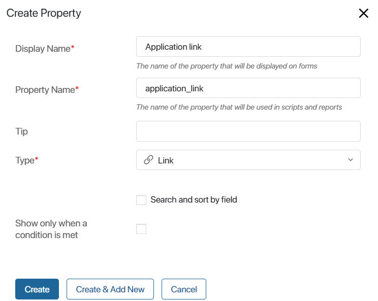
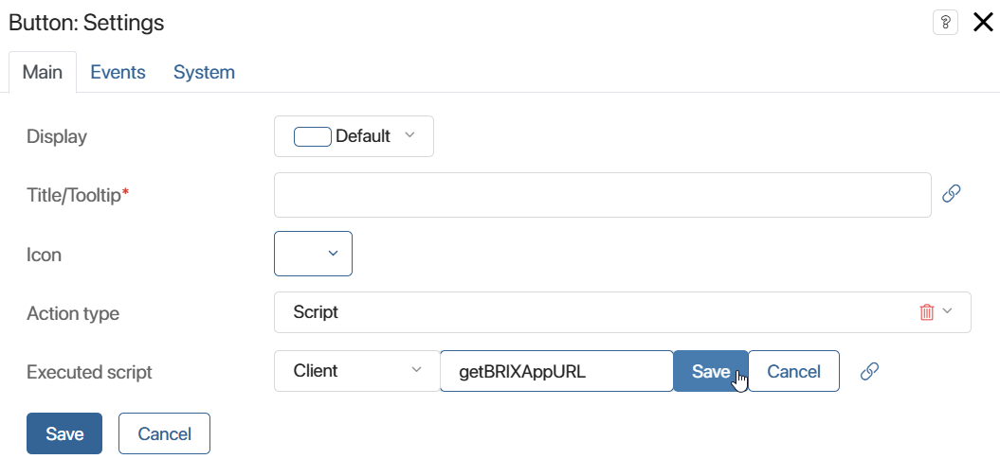

External users can interact with the portal from a browser, BRIX for desktop (version 2.0.6 and higher), and mobile devices (version 1.3.0 and higher).
To enable external users to work with the portal from applications, the Administrator needs to place a special link on the portal page for access from the application.
To do this, in the interface designer of the portal page, go to the Scripts tab and add the Namespace.portal.generateELMAAppURL() method. Then place the generated link on the portal page. For example, using a property of the Link type, into which the value generated by the method will be passed. We will consider a detailed example of placing the link on the page later.
You can also convert the link into a QR code using an external service and also place the image with the code on the page, for example, using the Text widget.
To access the portal in the application, the user needs to follow the link placed on the page. This will open the BRIX application with the page of authentication to the external portal.
To access the portal via a QR code, the user needs to open the page of the portal where the code is placed and the BRIX application for mobile devices. Then on the authentication page in the application, they need to click Scan QR code. After scanning the image, the sign-in page to the external portal will open.
Example
Let’s consider an example of adding an application sign-in link to the portal page. We will make it so that the link is generated and displayed on the portal page after the button is clicked. To do this:
- Go to the interface designer of the external portal page.
- On the Settings tab, in the Available items section, enable the Allow using all items option to enable access to global constants.
- On the Context tab, create a property of Link type.

- Open the Template tab and place the created property on the modeling canvas.
- In the opened property settings window, set the Read only option to Yes. This is necessary to make the link clickable. Save the settings.
- Bring up the Button widget in the field.
- In the opened settings window, set the widget parameters:
- Title/Tooltip*. Enter a name for the button, for example, Get link.
- Executed script. Add a script that will generate a link and output it in the Link field to work in the application. To do this, click Create, specify the function name: getBRIXAppURL, select Save, and then click Open.

- On the opened Scripts tab, write the following code in the created function:
async function getBRIXAppURL(): Promise<void> {
const BRIXAppURL = await Namespace.portal.generateBRIXAppUrl();
// Assigning the generated link to a variable of the Link type
Context.data.link = BRIXAppURL;
}
- Save and publish the changes.
After that, a button will be displayed on the external portal page where users can get the link to work in the external portal from the application.